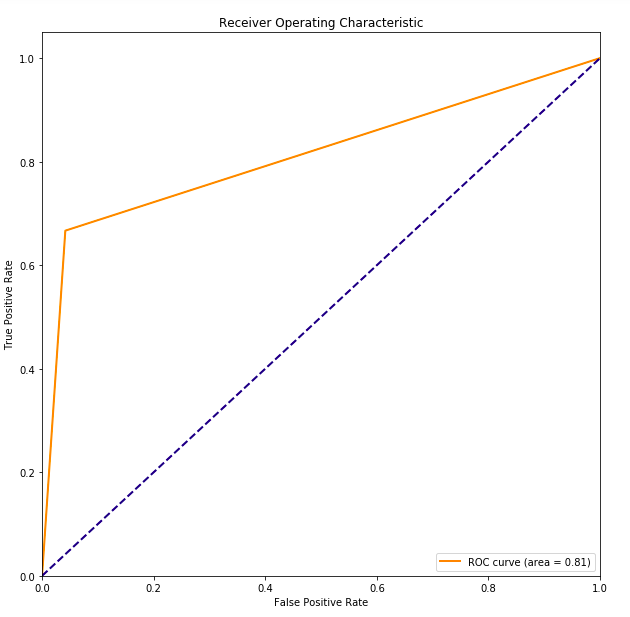
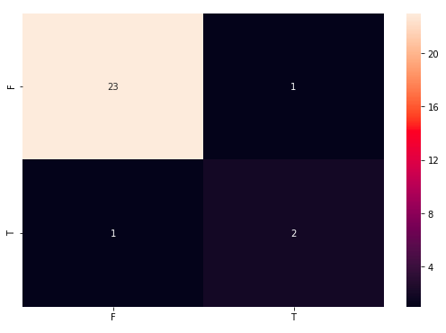

FORESEER
Yuehchou Lee
National Taiwan University, Mathematics
- Dr. Cheyu Hsu
National Taiwan University Hospital
- Chengen Lee
National Taiwan University, Institute of Applied Mathematical Sciences
- Yuehchou Lee
National Taiwan University, Mathematics
-
Challenge is to predict the one-year prognosis of Brain Metastasis after radiotherapy
-
Brain Metastasis is the kind of brain tumor
-
Brain tumor has the tumor pseudoprogression after radiotherapy
-
Contruct the workflow to support the radiologist to classify the one-year prognosis after radiotherapy
-
Simulate the multiple radiologists to label the tumor, that is to generate the different label
-
Select the robust Radiomics features
Step 1: Image Dataset Preprocessing
-
MRI bias-correction, resampling and normalization
-
Simulation multiple tumor label by using single label (gorund truth)
Step 2: Radiomics Features Extraction
- Radiomics can exract lots of features, such as shape, volume, first-order and high-order features

Step 3: Classification Models Establishment
Step 4: Classification Models Validation
-
Use thousands of cases to validate the above steps
-
Selected features:


-
Reduce the cost of labeling tumors by multiple radiologists
-
Improve AUC and sensitivity of one-year prognosis classification by using selected features
-
Validate above all steps by using NHI dataset (over 3000 cases)
-
Construct the segmentation model to support the radiologist to label tumor
-
Combine VAE to improve the result of classification